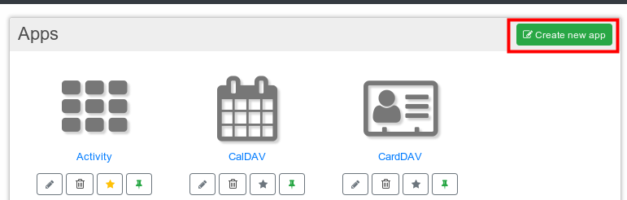

Testseite für Restructured Text¶
- Aufzählung Was kommt hier hin?
- Und noch ein Punkt Schon wieder eingerückt
Offene Punkte¶
Todo
HIer muss die Tabelle erweitert werden
(The original entry is located in /home/thorsten/Dokumente/sphinxtest/membersguide/restext.rst, line 55.)
Todo
Hier ist noch was zu tun Oder auch hier
(The original entry is located in /home/thorsten/Dokumente/sphinxtest/membersguide/restext.rst, line 101.)
Italics Bold
Section¶
Subsection¶
Code Example
- term (up to a line of text)
Definition of the term, which must be intenden
and can consist of multiple paragraphs
Line Breaks
Like in Source File
Hier auch
- This is a normal paragrahph followed by code::
- It is not processed the indentation is removed
Ab hier wieder normal environment
See also
Blblbla
Todo
HIer muss die Tabelle erweitert werden
| Header row, column 1 (header rows optional) | Header 2 | Header 3 | Header 4 |
|---|---|---|---|
| body row 1, column 1 | column 2 | column 3 | column 4 |
| body row 2 | … | … |
| A | B | A and B |
|---|---|---|
| False | False | False |
| True | False | False |
| False | True | False |
| True | True | True |
Warning
Das ist eine Warnung Alles was hier steht kommt in die Warnung rein
Das hier auch noch
UNd hier ist Schluss
Noch ne Subsection¶
Todo
Hier ist noch was zu tun Oder auch hier